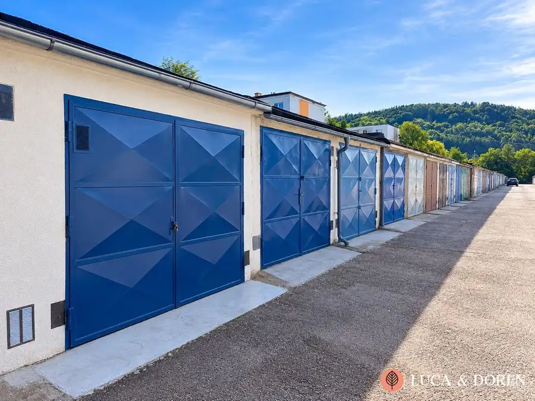
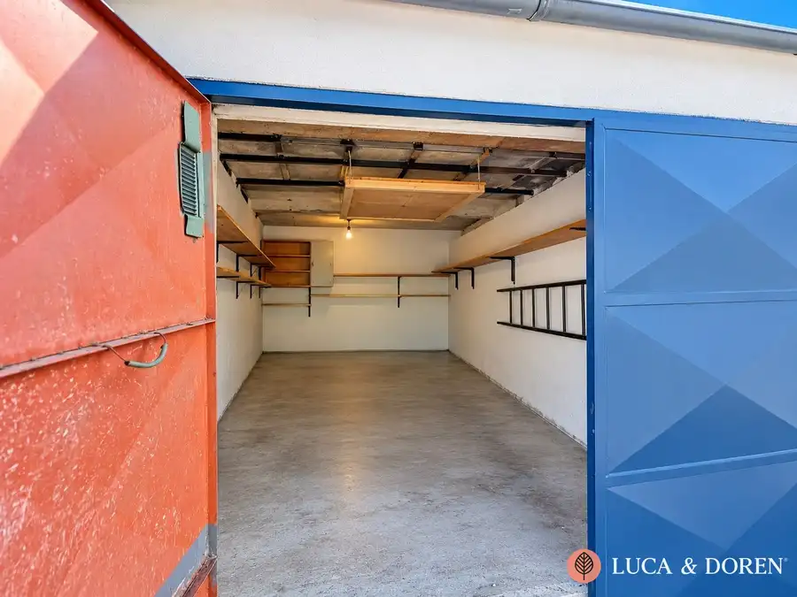
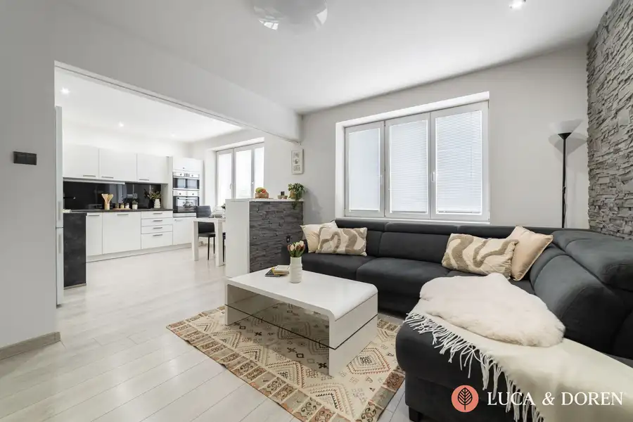
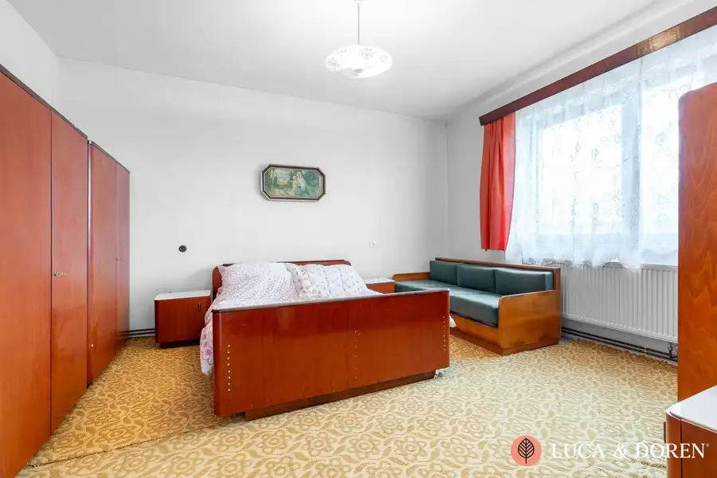

LUCA & DOREN | Na predaj | Garáž | Dubnica nad Váhom | Výborná lokalita
Nová Dubnica


- Plocha19 m²
- StavČiastočná rekonštrukcia
O nehnuteľnosti
Realitná kancelária Luca & Doren vám ponúka na predaj praktickú a priestrannú garáž v jednej z najžiadanejších lokalít v Novej Dubnici. Nehnuteľnosti tohto typu sú v danej oblasti mimoriadne žiadané a v ponuke sa málokedy ohrejú, preto ak hľadáte bezpečné miesto pre svoje vozidlo, dodatočný úložný priestor alebo plánujete rozumnú investíciu s garanciou stabilného výnosu z prenájmu, táto ponuka je určená práve vám. Garáž disponuje veľkorysou úžitkovou plochou 19 m² a prešla zásadnou vonkajšou modernizáciou, vďaka ktorej nový majiteľ nemusí v najbližších rokoch riešiť žiadne investície do údržby exteriéru, pričom tento rok bola na celej ploche strechy odborne položená úplne nová hydroizolácia, ktorá zabezpečuje 100% ochranu pred zatekaním a vlhkosťou, a minulý rok garáž dostala novú vonkajšiu omietku, kompletne upravený a spevnený nájazd pre bezproblémový vjazd vozidlom a nanovo bola natretá vstupná brána. Z technického hľadiska je v objekte zavedená funkčná elektrická sieť 230 V a nachádza sa tu praktická montážna jama obdĺžnikového tvaru, ktorá poslúži milovníkom áut na bežnú údržbu alebo ako skvelý podzemný úložný priestor. Samotný interiér garáže je zachovaný v pôvodnom stave, čo je obrovskou výhodou, nakoľko si vnútorné usporiadanie, regály, ponk či celkový vizuál môžete prispôsobiť presne podľa svojich vlastných predstáv a potrieb. Garáž sa nachádza v bezpečnej a strategickej zóne s vynikajúcim prístupom a vzhľadom na kritický nedostatok parkovacích miest v meste predstavuje táto nehnuteľnosť bezpečnú investíciu, ktorej hodnota bude časom iba rásť, preto neváhajte kontaktovať našu realitnú kanceláriu Luca & Doren a dohodnite si obhliadku ešte dnes, kým je táto jedinečná ponuka aktuálna.V prípade záujmu Vám zároveň vieme zastrešiť aj výhodné financovanie kúpy prostredníctvom hypotekárneho úveru, vrátane porovnania možností bánk a kompletného hypotekárneho servisu.Lenka LamačkováLUCA & DOREN s. r. o.+421 911 280 309lamackova@lucadoren.sk
Parametre
- Druh
- Garáž
- Dátum zverejnenia
- 06. 10. 2026
- Elektrina
- Na pozemku - 230 V
- Energetický certifikát budovy
- nie je
- Odpadové vody
- Nedostupné
- Plyn
- Nedostupné
- Počet nadzemných podlaží
- 1
- Stav nehnuteľnosti
- Čiastočná rekonštrukcia
- Typ
- Predaj
- Typ konštrukcie
- Tehlová
- Voda
- Nedostupné
- Zastavaná plocha
- 20 m²
- Úžitková plocha
- 19 m²
Kde to je


Mohlo by Vás zaujímať

BytNové 129 900 €LUCA & DOREN | Na predaj | 2-izbový byt | Dubnica nad Váhom | 58 m² | Priestranné bývanie s nízkymi nákladmi Dubnica nad Váhom 2-izbový58 m²3. podlažie
BytNové 145 600 €LUCA & DOREN | Na predaj | 2-izbový byt | Dubnica nad Váhom | 82 m² | Vlastná studňa+ záhrada Dubnica nad Váhom 2-izbový82 m²1. podlažie